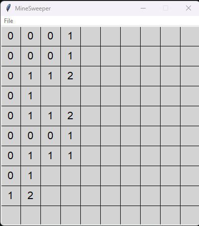
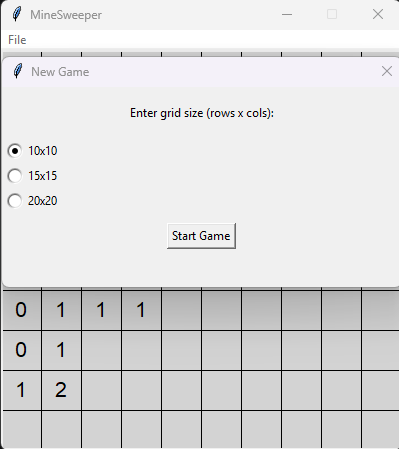
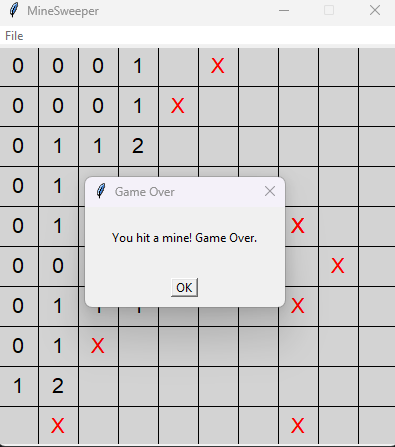

About Me
I am a Computer Science graduate from the University of Sussex. I have a passion for problem solving and mathematics.
I have experience in programming languages such as Java, Python, and JavaScript. However I was talk the fundamentals and am confident in my ability to learn and adapt to new languages and technologies.
I also enjoy playing video games, namely Old School RuneScape, watching C-dramas and K-dramas, and reading web novels.
Projects
Visual Nondeterministic-Finite-Automaton Builder And Simulator
The goal of this project was to make a simulator to simulate nondeterministic finite automata. The purpose of such a simulator is for users to educate themselves with the workings of NFA and to help visualise how an input will pass through such a automata. With a basic knowledge of computation knowing about lexical analysis, which is the first phase of a compiler where it reads an input and regular expressions, which are the languages accepted by the automata. Due to time limitations not all features were able to be implemented. I recently revised the project and polished it have a better graphical working function instead of using still jpeg images that I used in the original version.
Download HereBasic Minsweeper In Python
Using the tkinter library in python, I created a basic minesweeper game. The game is played on a grid of squares, where some squares contain mines and others do not. The User by clicking on the squares reveals wether they are safe of contain a mine. The game can be played in a 10X10, 15X15 or 20X20 size grid with increasing mines.


